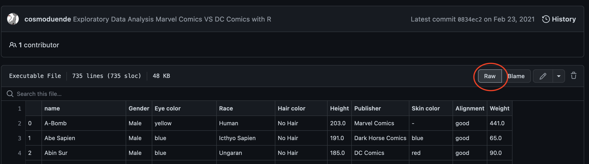
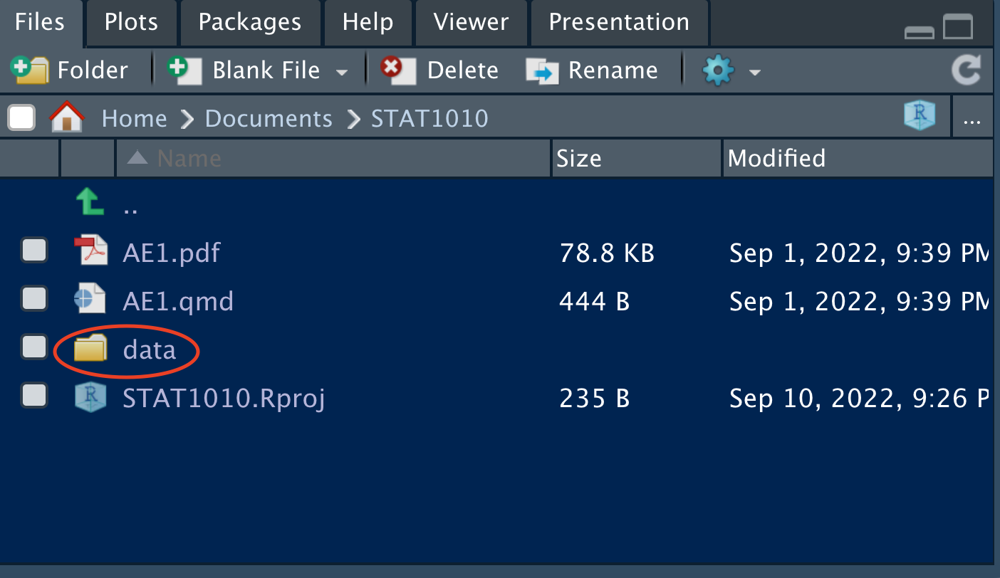
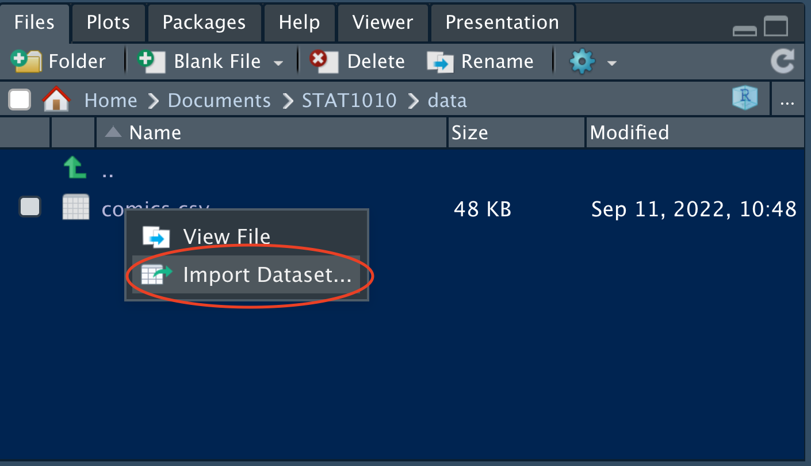
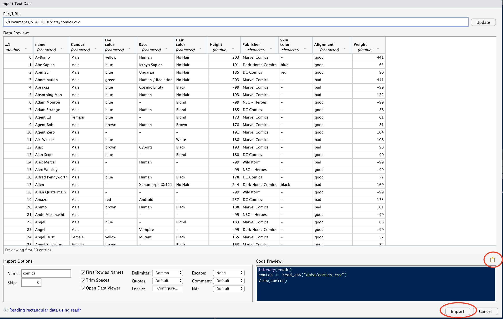
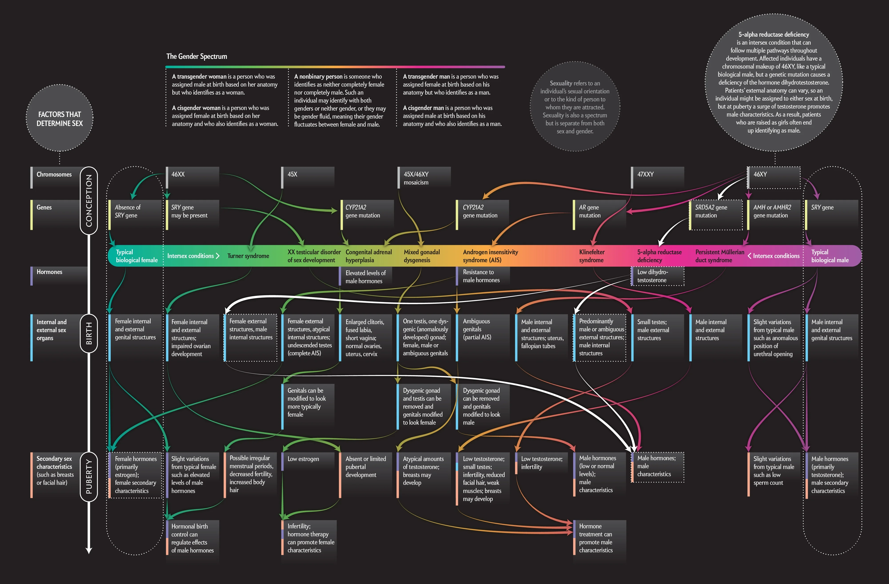

## loading libraries
library(tidyverse) # for data analysis and visualisation
library(here) # to organize files
library(praise) # for ocassional good vibes!Exploring categorical data AE-2
Important
This application exercise is due on 16 Sept at 2:00pm.
Load packages, data
Let’s look at the data on the web prior to importing it and also to ensure that we know what it should look like when it is imported into R.
Now press “raw”

Then copy the url:

Download the file by inserting the URL below:
fs::dir_create(here("data")) # create a data folder
download.file(
url = URL_HERE, # url of file to download
destfile = here("data/comics.csv") # directory/name_of_file
)Then click on the data folder in the “Files” panel.

Double click on “comics.csv” and click on “Import Dataset…”

Check the data in the “Data Preview” pane and ensure that it looks as it should.

Next, click on the clipboard icon to copy the code from the “Code Preview” pane, then click “Import”.
#PASTE THE CODE FROM "Code Preview" HEREData
The comics dataset includes basic information scraped from the superheroDb for a kaggle competition.
## An overview of the dataset and type of variables
glimpse(comics)The first superhero is named “A-Bomb” he is male, with yellow eyes, human, with no hair. Marvel Comics created him and his skin color is not listed, but his height and weight are.
Are there any differences between the data on the website above and the one in R? What are they? (Hint: which function can you use to see the whole dataset?)
praise()The ___ dataset has ___ observations and ___ variables.
Classify all variables in the dataset as either: quantitative discrete, quantitative continuous, qualitative nominal, qualitative ordinal. Which of these variables is also categorical?
Counts
How many publishers are there in this dataset?
comics %>% distinct(Publisher) # finds the levels of publisherHow many levels of the variable Alignment are there in this dataset?
comics %>% INSERT_FUNCTION(INSERT_VARIABLE)
A common way to represent the number of cases that fall into each combination of levels of two categorical variables, such as these, is with what’s called a “contingency table.” Note that each superhero appears in exactly one cell, statisticians call this mutually exclusive.
praise()Which is the most common category in this contingency table? How many superheros are in that category? (note: please look at both of the next two blocks of code.)
comics %>% count(Publisher, Alignment) %>% # counts all combinations View()
The long format above is difficult to see clearly. The format we normally use for contingency tables is the wide format.
The third line of coding below takes a long table and makes it wide by moving the Alignment variable to the columns, and filling the values of the table with the count variable (n). The names_from argument tells R where the names of the new columns are coming from (i.e. what variable), and the values_from argument tells R where the values in the table are coming from. Here, the values we want in our table are stored as a variable labeled n in our table.
comics %>%
count(Publisher, Alignment) %>% # counts all combinations
pivot_wider(names_from = Alignment,
values_from = n) # pivots from long to wide There are about ___ good superheros for each bad superhero.
ggplot(data = comics) + # the dataset geom_bar(mapping = aes(x = Alignment)) # a bar chart of AlignmentLook at the next two plots and find the difference between them. What would make you use one plot over the other? Which plot shows that females are much more likely to be good superheros than bad? Which one shows that good superheros are more likely to be missing gender? And which that females are more likely to be good superheros than males? All of these mean that the variables gender and alignment are associated, the value of one impacts upon the value of the other.
ggplot(data = comics) + # add the data geom_bar(mapping = aes(x = Gender, # bar chart of gender fill = Alignment)) + # colored by alignment labs(title = "Gender colored with alignment") # add titleggplot(data = comics) + # add the data geom_bar(mapping = aes(x = Alignment, # bar chart of alignment fill = Gender)) + # colored by gender labs(title = "Alignment colored with gender") # add title
We note that the commonly held belief that gender is binary is no longer the scientific consensus and that gender is a complex spectrum.

Statisticians want to discuss the strength of association of variables. They want to ensure that this association is not the result of random noise, but instead is a function of the underlying population of interest (all superheros).
praise()Chi-Squared test
To test for independence in 2 categorical variables, statisticians use a Chi-squared test. This is a hypothesis test so it has both a null hypothesis (\(H_0\)) and an alternative hypothesis (\(H_A\)).
\(H_0\) = the variables are independent, there is no relationship between the two categorical variables.
\(H_A\) = Knowing the value of one variable helps to predict the value of the other variable
Just like a fair court case, where a defendant is assumed to be innocent until proven guilty, here we assume \(H_0\) until proven otherwise. The proof that we present at the case is a formula relating the actual values in our sample to what we would expect to get under the independence assumption.
To perform a Chi-squared test of independence on gender and alignment we must find the marginal distributions of both gender and alignment.
Marginal distribution
The marginal distribution is the count of each variable.
comics %>% count(Alignment, Gender) %>% pivot_wider(names_from = Alignment, values_from = n)
We take the original two-way table (with two categorical variables) and added up the cells across each level of align (ie \(1+7+19+2 = 29\)) to get the marginal distribution for each variable.
comics %>% # the dataset
count(Gender) # and marginal distribution of genderpraise()comics %>% # the dataset
count(Alignment) # and marginal distribution of the AlignmentIf these are independent, we would expect \(\frac{200}{29+200+505}\) of the \(207\) (about \(56.4\)) bad superheros to be female, and the same proportion of \(496\) (about \(135.1\)) good superheros to be female, and so on.
- Assuming independence of Alignment and Gender, how many good superheros would we expect to be male? (hint: use the “$$” to make\(\frac{1}{2}\))
More information, including mathematical notation can be found here.
Fortunately, `R` does all of this for us.
# the "$" sign pulls out the Gender values and Alignment value from the comics dataset
chisq.test(comics$Gender, comics$Alignment)We get a warning because the missing values (“-”) expected counts are probably quite small. You can safely use the chi-square test with critical values from the chi-square distribution when no more than 20% of the expected counts are less than \(5\) and all individual expected counts are 1 or greater. In particular, all four expected counts in a \(2 \times 2\) table should be 5 or greater.
praise()The \(p-value\) for this test \(0.0003298\) is very small which means that we have very strong evidence against \(H_0\) — that there is independence between Alignment and Gender — and we can reject the null hypothesis. This suggests that the association between Gender and Alignment is not likely due to chance.
There are a few characters with missing data “-” in the Alignment and Gender variables? How many are in each?
comics %>% INSERT_FUNCTION(INSERT_VARIABLE)comics %>% INSERT_FUNCTION(INSERT_VARIABLE)Since there are only a few missing values (<10%) in each category, there is no reason to keep them especially since our analysis is largely about these two variables.
What does the “!=” operator do?
comics_filtered <- # assign a name to a new dataset comics %>% # tell R which dataset to start with INSERT_FUNCTION(Alignment != "-", # remove "-" values in Alignment Gender != "-") # remove "-" values in GenderRemake the “Alignment colored with gender” plot and the “Gender colored with alignment” plots with this new dataset.
Redo the Chi-Squared test for independence between Alignement and Gender. Include all hypotheses, and computations for at least \(2\) expected values. Does this change our conclusion?
praise()Side-by-side barcharts allow us to represent the counts from a contingency table graphically. Telling
Rto make a side-by-side barchart involves adding the wordsposition = "dodge” to the coding from above. Now created the other bar chart side-by-side, the “Gender colored with alignment.” use the comics_filter dataset.ggplot(data = INSERT) + # add the data geom_bar(mapping = aes(x = INSERT, # bar chart of alignment fill = INSERT), # colored by gender position = INSERT) + # side_by_side labs(title = "Alignment colored with gender") # add title
Proportions
We have been focusing mostly on counts. Proportional data is also interesting to explore and it is easy to get R to produce those for us.
What combination of Gender and Alignment has the highest proportion? What is the value? What is the sum of all of the proportions in the table below? (Note: Use the View() function to go through each line of code and ensure you know what each step does.)
comics %>% # which dataset to use count(Gender, Alignment) %>% # counts all combinations mutate(prop = n / sum(n)) %>% # finds proportions select(Gender, Alignment, prop) %>% # selecting which cols to pivot pivot_wider(names_from = Alignment, # the variable to pivot values_from = prop) # which values to pivot
Conditional proportions
If we’re curious about systematic associations between variables, we should look to conditional proportions. An example of a conditional proportion is the proportion of female superheroes that are good. To build a table of these conditional proportions, we need to specify a grouping variable before we calculate the proportions. What proportion of female characters are good? What do the rows sum to? (Note: Use the View() function to go through each line of code and ensure you know what each step does.)
comics %>% # which dataset to use count(Gender, Alignment) %>% # counts all combinations group_by(Gender) %>% # conditions on gender mutate(prop = n / sum(n)) %>% # finds proportions select(Gender, Alignment, prop) %>% # selecting which cols to pivot pivot_wider(names_from = Alignment, # the variable to pivot values_from = prop) # which values to pivotWhat proportion of good characters are male? What do the columns sum to?
comics %>% # which dataset to use count(Gender, Alignment) %>% # counts all combinations group_by(Alignment) %>% # conditions on gender mutate(prop = n / sum(n)) %>% # finds proportions select(Gender, Alignment, prop) %>% # selecting which cols to pivot pivot_wider(names_from = Alignment, # the variable to pivot values_from = prop) # which values to pivotpraise()Plotting proportions is similar to the side-by-side bar chart completed earlier. Instead of
position = "dodge"we useposition = "fill". Draw one such plot below using Gender for thexaxis and color it using Alignment.ggplot(data = INSERT) + # add the data geom_bar(mapping = aes(x = INSERT, # bar chart of ? fill = INSERT), # colored by ? position = INSERT) # fillNow, change the label of the
yaxis fromcountby including the codinglabs(y = "Proportion of superheroes")praise()Does the above plot condition on gender or alignment? How do you know? (hint: what sums to 1?)
Condition on the other variable.
ggplot(data = INSERT) + # add the data geom_bar(mapping = aes(x = INSERT, # bar chart of ? fill = INSERT), # colored by ? position = INSERT) + # fill lab(y = "INSERT Y AXIS TITLE HERE")Another way to view the differences in variables is to facet. What is the advantage of a facet plot over a stacked barchart?
ggplot(comics) + # which dataset geom_bar(mapping = aes(x = Gender)) + # bar chart of Gender facet_wrap(~Alignment) # broken down by Alignment